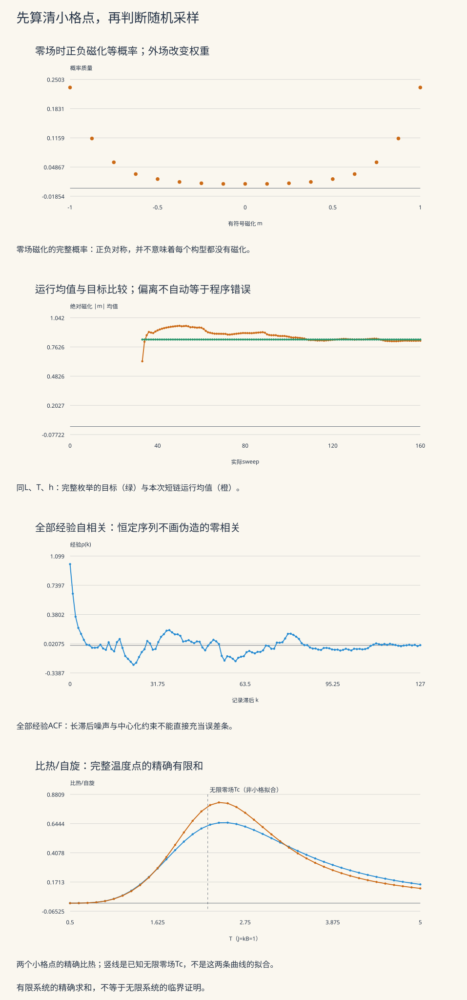

本页目录
计算物理 IV · 格点模型与蒙特卡洛
本页问题：程序画出一条平滑的磁化曲线，怎样知道它在采样正确模型，又怎样知道误差条可信？
先完整算清一个小系统，再用同一模型检验随机算法。前置：统计系综、蒙特卡洛的目标平均与有限方差、概率的期望和协方差。本页把格点边界、实际更新、统计窗口和有限尺寸分别列账。
学习层：先造一把能核对采样结果的尺
4×4很小，却已经有65536个不同构型
每个自旋只能朝上或朝下，16个自旋共有 \(2^{16}=65536\) 种组合。这个规模仍能完整枚举，因而我们可以先算出目标平均，再判断一条短链偏离它多少。到了 \(10\times10\)，构型数变成 \(2^{100}\)，同样的穷举办法就不适合在这个实验中使用。
| 模式 | 真正计算什么 | 不能据此宣布什么 |
|---|---|---|
| 完整枚举 | 3×3或4×4周期格点的全部构型权重 | 大系统和无限系统也有同样结果 |
| 单点采样 | 每次提议、接受或拒绝、每条实际记录 | 固定种子保证独立或热化 |
| 有限尺寸比较 | 两个小格点的精确温度曲线 | 两条小系统曲线足以拟合临界指数 |
默认取 \(J=k_B=1\)、\(L=4\)、\(T=2.3\)、\(h=0\)，先运行32个sweep，再每个sweep记录一次，共128条。一个sweep是 \(L^2\) 次有放回选点提议，不是保证每个格点恰好更新一次。
无JavaScript也能核对。 全正构型有 \(2L^2\) 条同向键，因此零场能量为 \(-2L^2\)。翻转一个自旋让四条键各增加2，故 \(\Delta E=8\)。默认温度下接受概率为 \(e^{-8/2.3}\)，约0.0309。
下面把完整有限和与seed为20260911的一次短链并排列出。所有随机初值和更新均实际执行，完整枚举不使用这条短链。
| 量 | 默认数值 |
|---|---|
| 精确能量均值/自旋 | -1.54131149246 |
| 精确有符号磁化均值（理论为0，表内保留浮点结果） | -1.05035394182e-19 |
| 精确绝对磁化均值 | 0.833798914587 |
| 精确比热/自旋 | 0.794329749298 |
| 精确磁化率/自旋 | 5.19986795893 |
| 本次能量均值/自旋 | -1.486328125 |
| 本次有符号磁化均值 | 0.193359375 |
| 本次绝对磁化均值 | 0.822265625 |
| 真实总提议数 | 2560 |
| 真实总接受数 | 456 |
| 绝对磁化IMS标准误诊断 | 0.0358113864523 |
| 绝对磁化IMS有效样本诊断 | 33.2403309741 |
| 绝对磁化IMS相关时间诊断 | 1.92537192394 |
| 实际均匀数调用数 | 5136 |
短链均值与精确目标的差是这一次误差；IMS标准误是由短链估出的诊断量，不能把两者混称为“真实误差条”。更不能从接受率推断目标平均已被充分访问。

静态图与实验使用同一组模型定义。磁化概率图保留所有可取值；经验ACF保留全部滞后；温度曲线保留全部温度点。曲线之间的连线便于阅读，不会增加新的观测或精确求和点。
1. 从边界开始定义模型
设 \(n=L^2\)，自旋 \(s_{x,y}\in\{-1,+1\}\)，下标按模 \(L\) 环绕。能量和总磁化定义为
只写向右和向上的邻居，是为了让每条无向键恰好计一次。翻转时却必须查看全部四个邻居，因为四条相关键都会改变。若把能量中的双计数与更新中的单计数混用，程序仍可能运行稳定，但采样的已是另一个模型。
实验取 \(J=k_B=1\)，所以 \(T\) 是以 \(J/k_B\) 为单位的温度，\(h\) 是以 \(J\) 为单位的场能量参数；\(\beta=1/T\)。要恢复单位，Boltzmann因子应写 \(e^{-E/(k_BT)}\)，不能把摄氏数值直接塞进指数。
单位自旋的量为
零场能量始终在 \([-2Jn,2Jn]\) 内，但上界未必能达到。偶数 \(L\) 的棋盘构型让每条键反向；奇数周期长度绕一圈后不能让每条键都反向。完整枚举给出 \(L=3\) 时最高 \(E_0=6J\)，并非 \(18J\)。这也是不能把3×3与4×4的所有差别只归因于“大小”的原因。
2. 完整枚举：把庞大的状态表压缩成足够的信息
当能量只依赖 \((E_0,M)\)，可以按这两个整数汇总构型数
于是
本实验逐一访问全部 \(2^n\) 个构型；表格列出所有非零的联合态密度桶。对每个桶求和时，已乘上桶内全部构型数，因此没有把一个高简并度能级错当成一个构型。核对的第一步是
低温下直接计算指数可能溢出。这里减去已知最低能量 \(E_{\min}=-2n-|h|n\)，计算
这是同一概率的稳定重写；没有改变温度或偷偷削平权重。“精确枚举”指完整有限和，指数和求和仍有浮点舍入误差。
零场下，全局翻转 \(s\mapsto-s\) 保持 \(E_0\) 不变，使 \(M\mapsto-M\)，所以有限系统的精确 \(\langle m\rangle=0\)。与此同时 \(\langle|m|\rangle\) 可以接近1：低温概率集中在接近全正和全负的两端。均值抵消与每个状态都接近零，是完全不同的图像。
3. 比热、磁化率与Binder量各在测什么
固定外场时，对有限配分和直接求导：
利用 \(d\beta/dT=-1/T^2\)，每自旋比热为
同理，固定温度下
磁化率的响应对象是有符号磁化；擅自把上式的 \(m\) 换成 \(|m|\)，不会得到同一个导数。实验分别列出所有桶对 \(c_V\) 和 \(\chi\) 的非负贡献，便于检查差一个 \(n\) 或 \(T\) 的错误。
本页采用
作为Binder量的定义。零均值Gaussian分布的该量为0，集中在等概率 \(\pm m_0\) 的双点分布则为 \(2/3\)。这是描述分布形状的例子，并不是说所有有限温度、非零场的结果都在这两个值之间。非零场时这里仍使用未中心化矩，不能换一个定义后继续比较同一列。
4. 一次翻转与详细平衡的证明
翻转第 \(i\) 个自旋，只有四条邻接键和一个外场项改变，因此
每次均匀选择一个格点，正反提议概率同为 \(q=1/n\)。接受规则是
因为
正反概率流相等。将所有起点求和即得 \(\pi P=\pi\)，所以Boltzmann分布是平稳分布。拒绝更新时留在原构型，这个自环也属于转移矩阵，不能从路径中删掉。
在本实验的有限正温度范围内，任何有限能量的单点翻转都有正接受概率；任意两个构型可以通过有限次翻转连通，因此链不可约。全正构型至少有正概率拒绝一次翻转：此时 \(\Delta E=8+2h>0\)。有限不可约链中一个状态有自环就足以推出非周期性，因而平稳分布唯一、理想链从任何初态都能收敛到它。
这个证明没有给出多长时间才“足够”。若提议不对称，必须加上Hastings的提议比；若限制可达状态或引入带符号权重，也不能原样沿用此证明。这里的Metropolis步是采样算法的时间，不自动等于材料中的真实自旋动力学时间。
5. 让每个计数都对应真正执行的工作
热化为 \(b\) 个sweep，每隔 \(d\) 个sweep记录一次，共 \(N\) 条，则第 \(j\) 条记录在
实际执行总提议数为
实验限定 \(K\le16384\)，超出就明确报错。全部热化步、拒绝步和记录间隔步都有账本；图的横轴使用实际sweep。每次记录时，程序还从全格重新计算 \(E_0\) 和 \(M\)，核对局部增量更新。
本页使用可重放的32位LCG：
初值消耗 \(L^2\) 个均匀数，即使选择确定初态也照样消耗；每次提议再消耗两个，一个选格点，一个决定是否接受。总调用数因此是 \(L^2+2K\)。seed为0是有效且独立于seed为1的重放入口。
这只是透明的教学随机数实现。理论证明中的随机选择是理想概率模型；确定性LCG重放验证的是代码和计数，不能证明均匀数独立、消除生成器相关性，或把同一seed的重复运行算作新数据。
6. 相关读数的有限方差
先假设记录过程已经平稳，观测量为 \(A_j\)，定义真实协方差
展开 \(\bar A=N^{-1}\sum_j A_j\) 的方差，并按滞后配对，得到精确有限式
权重 \(N-k\) 来自相隔 \(k\) 的记录对数，并非人为窗口。若相关和可求和、\(N\) 足够长，才近似为
常用 \(N_{\rm eff}=N\gamma_0/\sigma_{\rm as}^2\)。正相关常使误差增大，但负相关也可能降低均值方差，故不能普遍把有效样本数夹到 \(N\) 以下。Stan的ESS说明也明确区分了这种情况。
如果还没忘记初值，方差公式中的平稳前提不成立；误差均方还包括偏差：
热化敏感性需要多初值和更长记录来判断，不能让一条误差条同时冒充偏差、有限尺寸与模型误差的总账。
7. 为什么不把所有经验ACF直接相加
对本次有限序列，实验用统一分母 \(N\)：
所有中心化残差之和为0，因此必有
所以“把全部经验相关都算得很完整，再无脑相加”反而会给出零！完整展示是为了核查，实际估计必须处理长滞后噪声。
本页展示Geyer的初始正序列与初始单调序列。对于平稳可逆链，中心化观测量的谱表示可以写为
把相邻两项配成
因被积函数非负，\(\Gamma_k\ge0\)；相邻差与二阶差分别多出因子 \(1-\lambda^2\) 与 \((1-\lambda^2)^2\)，也非负。因此理论成对序列非负、非增且凸，退化情形允许等号。这给估计窗口提供了结构依据，而不是看到单个负 \(\rho_k\) 就立即抹去后面的信息。
实验先形成全部 \(\widehat\Gamma_k\)，保留首个非正值之前的初始正段；再以到当前位置的累计最小值作单调修正。设保留的修正值为 \(\widetilde\Gamma_k\)，计算
原始成对值、IPS保留值、IMS保留值和停止位置全部入表；不作凸性再修正。若 \(\widehat\gamma_0=0\)，经验相关未定义；若渐近方差估计非正，SE与ESS显示未定义；窗口内未找到截断时也会明确标记。一个正的输出仍只是短序列估计，不能认证收敛。成对估计的条件与构造可参看 Geyer的说明。
8. 分块均值：第二种诊断为何也需要条件
将 \(N=KB\) 条记录划为 \(K\) 个连续、互不重叠的块，每块 \(B\) 条：
如果块足够长、不同块的均值相关很弱，这个估计才更接近均值方差。增大 \(B\) 同时减少 \(K\)：图的最后一点只有两个块，不能因为它大或平稳就认定“最可靠”。相关方差与分块方法的完整背景见 Janke讲义 §3.1–3.2。
本实验选择 \(N=32,64,128,256\)，遍历 \(B=1,2,4,\ldots,N/2\)，因此所有块长都整除 \(N\)，没有悄悄扔掉尾部。每种块长的每一个块均值都可查看。
当全部读数相同时，naive SE和分块SE都是0，但目标系统仍可能有大量未访问构型。更一般地，相关平稳样本的通常样本方差
满足
它不普遍是单次目标方差 \(\gamma_0\) 的无偏估计。式子提醒我们：把独立样本公式搬到相关链上之前，要重新检查推导。
9. 从有限系统到前沿临界问题
有限正温度下，\(Z\) 是有限个正指数项的和，故自由能在实参数范围内光滑。比热峰可以很尖，仍不是无限系统的非解析奇点。
对零外场、铁磁、无限二维方格Ising模型，
本实验只在 \(h=0\) 时标出这个已知极限值；它不是3×3和4×4的拟合结果。Tong §5.3.3给出二维方格对偶关系与临界温度的背景。有限周期边界的精确分区函数仍由本页实际枚举求得，不用无限格点结论替代。
真正推进临界研究，需要多个更大的尺寸、可控的统计误差和修正标度项。诸如
的尺度变化要与边界、温度分辨率、拟合区间及跨初值一致性一起报告。局部更新在长程关联附近可能慢化；改变算法后还要比较单位计算成本下的误差，不能仅比较“多少步”。
另一条推进方向是集团更新。例如零场铁磁Wolff方法以同向邻居间的连接概率 \(p_{\rm bond}=1-e^{-2J/(k_BT)}\) 构造包含一个随机种子格点的簇，再翻转整簇，见 Janke §2.5.2。它利用模型结构改变采样动力学；本页实验实现的是单点Metropolis，并未把集团算法的性能当成已经测过的结果。外场、受挫耦合或量子带符号权重还需要另外的算法论证。
10. 四道迁移题：从图像走回公式
题一。 在 \(L=4\)、\(J=1\)、\(h=0.2\) 的全正构型中，算能量、翻转一次的能量变化，以及 \(T=2\) 的接受概率。为何更新公式需要四个邻居，而能量表达式只写两个？
答案：键只数一次，改变的键全部计入
有 \(n=16\) 个自旋和32条无向键，故
四条键各增加2，总计8；磁化由16变14，外场能增加0.4。翻转后能量为 \(-26.8\)。能量表达式只写右、上邻居是避免双计数；翻转影响左、右、上、下四条键，更新不能漏掉其中两条。
题二。 零场低温的有限系统几乎等概率在 \(m=+1\) 和 \(m=-1\)。分别估计 \(\langle m\rangle\)、\(\langle|m|\rangle\)、\(\chi\) 和 \(U_4\)。若用 \(\operatorname{Var}(|M|)/(nT)\) 代替磁化率会怎样？
答案：对称性抵消均值，却不消除响应
在这个双点近似下
而 \(|M|=n\) 几乎不变，替代公式会给出接近0，遗漏微小外场重新分配正负两端权重产生的响应。真实有限正温度还存在其他构型，因而上述是低温双点近似；完整枚举的结果不会强行等于近似值。
题三。 为什么“经验ACF算到全部滞后”不意味着可以全部相加？一条32次都等于1的记录应怎样报告？
答案：完整展示与有效估计是两件事
令 \(x_j=A_j-\bar A\)。因为 \(\sum_jx_j=0\)，
按滞后重排即得 \(\widehat\gamma_0+2\sum_{k=1}^{N-1}\widehat\gamma_k=0\)，所以全加结果是中心化的代数约束，不是有效的误差估计。
恒定记录中 \(\widehat\gamma_0=0\)，比值 \(\widehat\rho_k\) 未定义；均值为1，样本方差及分块SE诊断为0，但不能报告“有32个独立样本”。若零场有限目标均值为0，本次有符号磁化均值误差就是1。应检查相反初值、延长采样和跨势垒访问，并把经验诊断失效明确写出。
题四。 两个小格点在某个温度附近都有比热峰，能否由此给出无限系统的临界指数？有限零场 \(\langle m\rangle=0\) 又为何不否定自发磁化？
答案：有限和、极限以及取极限的顺序
有限配分和始终正且光滑，峰的位置和高度会随尺寸与边界改变；两个小格点不能分辨渐近标度与有限尺寸修正，更不能用无误差条的短链峰拟合精确指数。还需要更多尺寸、温度分辨率、可靠统计误差以及拟合稳定性检验。
零场下先对任何有限系统求完整平均，正负构型严格抵消。自发磁化考察的却可以是
与先令 \(h=0\) 再求有限系统均值的操作不同。小正场先在大系统中选择一支，随后撤场；是否保留非零极限是热力学问题，不由某条有限短链停留在正磁化一侧来证明。
11. 用可复核的证据继续做研究
可先选完整枚举，查看零场磁化分布的两端；再选默认短链，比较同模型目标与本次运行均值；随后切换观测量，观察 \(e\)、\(m\)、\(|m|\) 为什么有不同诊断。最后降低温度、比较全正与全负初态，检查零样本波动为何不能担保准确。
向更大格点推进时，至少保留边界、\(J,T,h,L\)、更新规则、初始化、随机数实现、实际提议预算、记录时刻、观测量定义、窗口与块长。每次扩展优先保留一个能求参考答案的极限或小系统。这样，课程中的图不仅展示“发生了什么”，还给出“怎样发现自己算错了”的路径。
继续阅读：采样方法与系综、分子动力学与辛积分、PDE离散与边界条件。